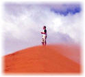

Un baile por el mundo, con la gente
Imagina ver a un tipo de 31 años bailando frente a una cámara en diferentes lugares del mundo.
Yo tampoco pensé que tuviera nada de interesante, hasta que vi el video ^_^
Paisajes deslumbrantes, una hermosa melodía, y gente de todo el mundo bailando frente a una cámara, resulta en un video espectacular.
Las cosas más simples, te recuerdan las más importantes.
Un poco de información adicional…
Sobre el video:
- 4 minutos, 29 segundos de duración.
- 14 meses viajando por el mundo.
- 42 países visitados.
- Letra de la canción basada en un poema de Rabindranath Tagore.
- Melodía interpretada por Palbasha Siddiqui, una joven de 17 años.
Sobre Matt Harding:
- Ex-programador de videojuegos.
- Tuvo la idea por sugerencia de un amigo en el año 2003.
- Desde entonces ha grabado 3 videos de este tipo, éste es el tercero.
- A partir del segundo tiene el patrocinio de una marca de gomas de mascar.
- El que hace en el video… es el único baile que sabe hacer.
Hice una traducción de la letra de la canción, al parecer el original está en bengalí. Letra basada en el poema “Flujo de vida” de Rabindranath Tagore. (Traducción a partir del inglés).
El mismo flujo de vida que día y noche corre por mis venas, corre a través del mundo y baila en compases rítmicos.
Es la misma vida que se lanza en alegría a través del polvo de la tierra en incontables espadas de hierba y se rompe en las tumultuosas ondas de hojas y flores.
Es la misma vida que es acunada en el océano-cuna del nacimiento y de la muerte, en el flujo y reflujo de la marea.
Siento que mis miembros se vuelven gloriosos por el toque de este mundo de vida. Y mi orgullo emerge del pulso latiente de las eras que en este momento bailan en mi sangre.
Ve el video, puede que sean los mejores 4 minutos y medio de tu día ^_^
Para conexiones lentas, el siguiente video es en Youtube, pero si puedes esperar un poco, velo en alta definción más abajo.
En alta definición (junto a donde dice Vimeo, hay unas flechas para verlo a pantalla completa):
Más información:
Sitio Web de Matt Harding (en inglés).
Biografía de Matt Harding en la Wikipedia
Visto en Boing Boing
Metadatos y acciones
 Temas: curiosidades, felicidad, musica, video ⋅
Para guardar: Enlace permanente a esta anotación.
Temas: curiosidades, felicidad, musica, video ⋅
Para guardar: Enlace permanente a esta anotación.
 Print This Post
Print This Post
Comentarios
Los comentarios están cerrados.
Categorías
Últimas 4 anotaciones
Últimas anotaciones en cada categoría

Divulgación
El dinero no fomenta la creatividad: Daniel Pink en TEDGlobal 2009

Inspiración
Los 30 no son los nuevos 20

Noticias
Ver tu mente en tiempo real: Christopher deCharms en TED 2008
![Música en la era digital [Animación]](../../../wp-content/themes/tma/images/featured/animation_04_2009_featured.jpg)
Ocio
Música en la era digital [Animación]
julio 31, 2009, 4:28 pm
jaja que bueno q esta.
septiembre 13, 2009, 3:26 pm
Me encanta lo de este muchacho Matt….lleva con su
original baile,,,,,alegria a todo el mundo….
bravoooo,,,,,amigo ……te felicito,,,,sigue asi…
besos….Elida
enero 18, 2013, 8:18 am
ME ENCANTA, FANTASTIC, HAPPY, ENERGIA, LOVE, HEALTH, KEEP DANCINGGGG )
)
enero 18, 2013, 8:19 am
Es una buenisima idea bailar por todo el mundo, enhorabuena Matt, envias energia y alegria,
Besos,
Alicia